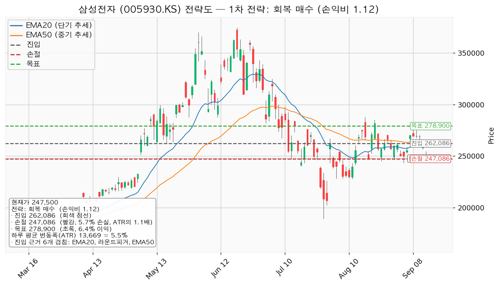
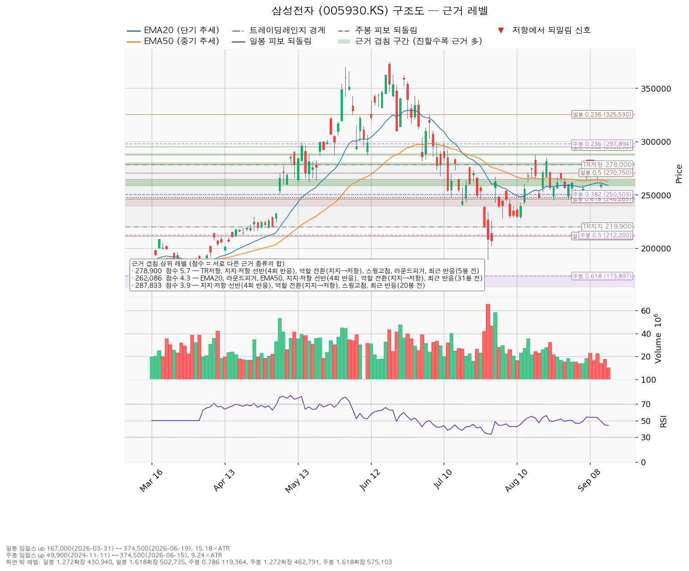
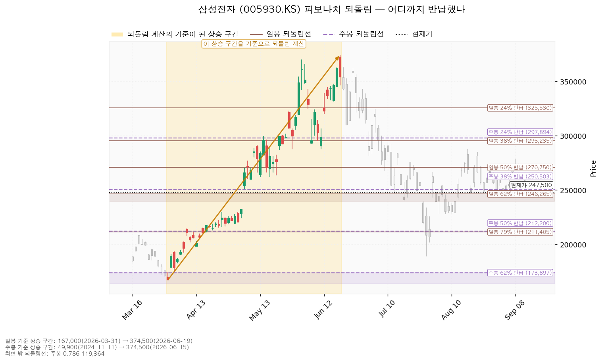
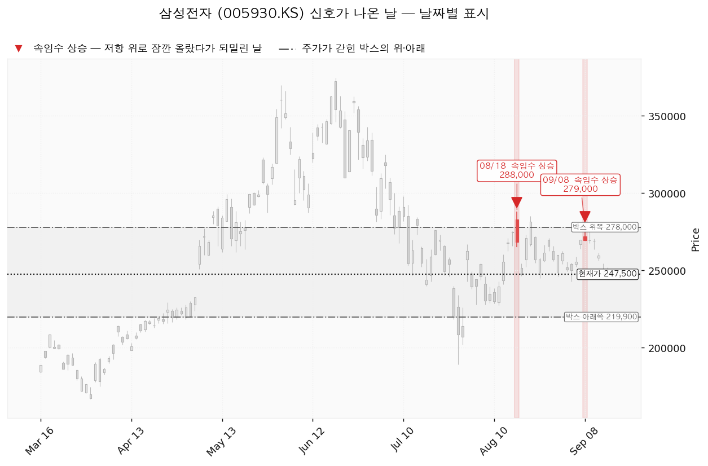

삼성전자(005930.KS)는 D램·낸드 등 메모리 반도체와 파운드리, 스마트폰·가전·디스플레이를 만드는 한국 기업이며, 매출의 큰 부분이 메모리 반도체 업황에 연동됩니다.
| 구분 | 가격 | 판정 방식 | 현재가 대비 | 상태 |
|---|---|---|---|---|
| 회복선 | 250,503원 | 일봉 종가로 회복한 뒤 되돌림에서 지지되는지 | +1.21% (0.22 ATR) | 회복 대기 — 09-15 종가 247,500원으로 아래 |
| 집행 손절 | 247,086원 | 도달 시 즉시 청산 — 진입한 경우에만 유효하며, 미진입 상태에서는 의미가 없습니다 | -0.17% (0.03 ATR) | — |
| 관망 종료 기준 | 240,000원 | 일봉 종가가 아래로 마감 / 또는 2026-10-28 실적 | -3.03% (0.55 ATR) | 유지 중 |
| 확인선(이번에는 진입 조건) | 262,086원 | 일봉 종가 돌파 후 되돌림에서 지지 확인 | +5.89% (1.07 ATR) | 미돌파 — 09-10 종가 269,000원 이후 아래 |
| 폐기선(구조) | 219,900원 | 이탈 후 3거래일 내 회복 실패 + 반등에서 저항으로 확인 | -11.15% (2.02 ATR) | 유지 중 |
표의 ATR은 하루 평균 변동폭(이번 조회 기준 13,669원)을 뜻하며, 거리를 하루치 움직임의 몇 배로 환산한 값입니다.
이번에는 진입 조건이 회복선이 아니라 확인선 262,086원입니다. 엔진이 고른 회복선 250,503원은 주봉 38% 반납선으로, 구조 회복이 시작되는 자리이지 매수 자리가 아닙니다. 대표 셋업의 진입가는 EMA20·EMA50·선반이 겹친 262,086원이며, 이 가격이 확인선과 같습니다.
폐기선은 현재가에서 하루 평균 변동폭의 2.02배 아래에 있어 실무상 쓸 수 있는 거리입니다(3배를 넘지 않습니다). 미진입 상태에서 실제로 보실 선은 관망 종료 기준 240,000원이며, 지금 가격에서 하루 변동폭의 0.55배 아래입니다.
박스 상단 278,000원은 목표 278,900원과 사실상 같은 자리이고, 그 위는 맥락으로만 봅니다.
① 직전 트리거는 하나도 충족되지 않았고, 가격은 반대로 갔습니다. 직전 리포트는 "회복선 264,209원을 종가로 되찾아도 손익비 0.86이라 사지 않는다"는 패스 결론이었습니다. 그 뒤 두 거래일 종가는 09-14 249,000원, 09-15 247,500원으로 회복선 264,209원을 종가로 넘은 날이 없습니다(미충족). 확인선·목표 279,625원은 이 기간 최고가가 254,500원이라 근처에도 가지 않았습니다(미충족). 관망 종료 기준 240,000원과 폐기선 219,900원은 종가로 이탈한 날이 없어 둘 다 유지 중입니다. 09-11 종가 259,500원에서 2거래일 동안 -4.62% 내렸습니다.
② 직전 셋업의 무효화 단계는 1단계에서 2단계로 넘어갔습니다. 직전 리포트는 2단계 경고 조건을 "이탈 후 3거래일 안에 264,209원 종가 회복 실패, 또는 그 전에 일봉 종가가 249,700원 아래로 마감 — 둘 중 먼저 오는 쪽"으로 적었습니다. 09-14 종가 249,000원으로 가격 조건이 먼저 충족돼 3거래일이 다 지나기 전에 경고 단계에 들어섰습니다. 직전 셋업은 이 시점에서 접고, 아래 새 좌표로 다시 잡습니다.
③ 09-15 저가 246,000원이 직전에 등록한 집행 손절 246,373원에 닿았습니다 — 그러나 이것은 보유분에 대한 지시가 아니었습니다. 직전 리포트의 결론은 패스였으므로 그 손절은 집행되지 않은 셋업에 붙은 가격입니다. 장부에 10주가 남아 있어 자동 점검이 이 가격을 보유분에 대고 "전량 손절"로 판정했고, 그 알림이 나갔습니다. 직전 리포트가 보유분의 정리 기준을 따로 적지 않은 것이 원인이며, 이번 리포트는 보유분 기준선을 240,000원 종가 이탈로 명시합니다.
④ 장부에 매수 기록이 생겼습니다. 직전 리포트는 "체결 기록이 없다"고 적었으나, 지금 장부에는 2026-07-01 매수 10주, 평단 336,535원이 있습니다. 직전 두 리포트의 셋업보다 앞선 매수이므로 그 셋업들의 진입가와는 무관합니다.
⑤ 좌표가 아래로 내려왔고, 이유는 가격이 내려온 만큼 이평선과 겹침 구간이 재정렬됐기 때문입니다.
| 항목 | 직전(09-11) | 이번(09-15) | 왜 |
|---|---|---|---|
| 박스 | 219,900~281,000원 (40거래일) | 219,900~278,000원 (40거래일) | 창 길이는 같고 상단만 내려왔습니다. 09-08 고가 279,000원에서 되밀린 날이 창 안에 남으면서 상단 기준이 278,000원으로 잡혔습니다 |
| 회복선 | 264,209원 (겹침 4.9점) | 250,503원 (겹침 2.0점) | 가격이 250,503원 아래로 내려가면서 주봉 38% 반납선이 위쪽 첫 회복 대상이 됐습니다 |
| 확인선 | 279,625원 | 262,086원 | EMA20이 258,760원, EMA50이 262,672원까지 내려와 선반 264,500원과 한 구간으로 묶였습니다 |
| 대표 셋업 진입 | 264,209원 | 262,086원 | 위와 같은 구간 재정렬 (-2,123원) |
| 집행 손절 | 246,373원 | 247,086원 | 손절을 밀어낸 기준이 250,000~250,503원 구간에서 주봉 38% 반납선 250,503원 단독으로 좁아졌습니다 |
| 목표 | 279,625원 | 278,900원 | 겹침 구간이 278,750~281,000원에서 278,000~280,000원으로 이동했고 점수는 4.5점에서 5.7점으로 올랐습니다 |
| 손절 폭 | 17,837원 (1.23 ATR) | 15,001원 (1.1 ATR) | |
| 목표까지 폭 | 15,416원 | 16,814원 | |
| 손익비 | 1:0.86 | 1:1.12 | 손절 폭이 줄고 목표까지 폭이 늘어 1 위로 올라섰습니다 |
| 하루 평균 변동폭 | 14,510원 (주가의 5.58%) | 13,669원 (주가의 5.52%) | 변동성이 조금 더 줄었습니다 |
| 관망 종료 기준 | 240,000원 | 240,000원 (동일) | 조건이 충족되지 않았으므로 옮기지 않았습니다 |
| 폐기선 | 219,900원 | 219,900원 (동일) | 박스 하단이 그대로입니다 |
⑥ 판단이 바뀌었습니다 — 패스에서 조건부 대기로. 직전 결론은 손익비 0.86으로 패스였고, 이번에는 1.12로 1을 넘겨 조건을 걸 수 있게 됐습니다. 손익비가 좋아진 것은 전망이 개선돼서가 아니라 가격이 5% 가까이 내려오면서 진입 후보와 손절 자리가 같이 내려왔기 때문입니다. 위쪽 목표는 거의 그대로인데 진입 지점이 낮아진 결과입니다. 1.12는 1을 갓 넘긴 값이라 비중 제한을 그대로 적용합니다.
⑦ 박스 안쪽 판정이 '매집 우위'에서 '중립'으로 내려갔습니다. 직전 리포트는 지지 테스트 거래량 감소와 저점 절상 두 가지를 근거로 매집 우위라고 적었습니다. 이번 조회에서 저점 흐름은 절상이 아니라 평탄으로 바뀌었고, 매집 근거로 남은 것은 지지 테스트 거래량 감소 하나입니다. 국면 후보도 매집(재축적)에서 미확정으로 내려갔습니다. 이 변화는 아래 '종목 개요'와 '횡보 지속' 시나리오에 반영했습니다.
⑧ 직전 리포트의 09-11 현재가를 정정합니다. 직전 리포트는 현재가를 "260,000원(2026-09-11 종가)"으로 적었는데, 확정된 09-11 종가는 259,500원입니다. 발행 시점(15시 43분)의 값이 그대로 남은 것입니다. 거리 계산이 0.2%가량 달라질 뿐 결론은 바뀌지 않습니다.
| 항목 | 값 |
|---|---|
| 보유 수량 | 10주 (2026-07-01 매수, 1회) |
| 평단 | 336,535원 (매입 원가 3,365,350원) |
| 현재 평가액 | 2,475,000원 (현재가 247,500원) |
| 평가손익 | -890,350원 (-26.46%) |
| 240,000원에서의 평가손익 | -965,350원 (-28.69%) |
| 219,900원에서의 평가손익 | -1,166,350원 (-34.65%) |
이 10주는 2026-07-01 매수분으로, 직전 두 리포트의 셋업보다 먼저 들어간 물량입니다. 아래 대표 셋업의 진입가 262,086원·집행 손절 247,086원은 새로 들어갈 때의 좌표이지 이 보유분의 좌표가 아닙니다.
| 항목 | 값 |
|---|---|
| 현재가 | 247,500원 (2026-09-15 종가) |
| EMA20 / EMA50(20일·50일 지수이동평균) | 258,760원 / 262,672원 — 둘 다 현재가 위(+4.55% / +6.13%) |
| RSI(14) (14일 상대강도, 50이 중립) | 44.1 — 중립 아래 |
| ATR(하루 평균 변동폭) | 13,669원 (주가의 5.52%) |
| 국면 | 횡보 박스 — 추세는 아래를 향하나 박스 구조는 유지 중(하단 사수가 조건) |
| 횡보 박스 | 219,900 ~ 278,000원 (최근 40거래일 기준, 가격이 이 안에 머문 비율 92.5%, 박스 폭은 하루 변동폭의 4.25배) |
박스는 40·90·180거래일 세 창을 모두 시험해 40거래일 창이 선택됐습니다(조회한 전체 일봉은 727개). 90거래일 창은 가격 유지 비율 90%에 아래로 흐르는 정도 0.409, 180거래일 창은 86.1%에 0.527인 반면, 40거래일 창은 92.5%에 0.293으로 지금의 움직임을 가장 잘 설명합니다. 직전 리포트와 같은 창입니다.
이 박스로는 위에서 내려왔습니다. 직전 구간은 285,500~372,250원 박스였고 아래로 이탈해 지금 박스로 들어왔습니다. 위에서 내려온 박스는 다시 오르기 위한 매물 소화일 수도, 하락이 이어지기 전의 멈춤일 수도 있어 박스 모양만으로는 갈리지 않습니다. 판단 근거는 박스 안쪽의 거래량과 저점 흐름입니다.
박스 안쪽 관측치 — 이번에는 중립입니다.
| 지지 테스트 | 저가 | 그날 거래량(평소 대비) |
|---|---|---|
| 2026-07-29 | 189,200원 | 2.13배 |
| 2026-08-04 | 228,000원 | 0.86배 |
| 2026-08-06 | 228,000원 | 0.80배 |
| 2026-08-11 | 227,500원 | 0.77배 |
지지 테스트를 반복할수록 그날 거래량은 계속 줄었습니다(2.13배 → 0.86배 → 0.80배 → 0.77배). 팔려는 물량이 아래에서 소진되고 있다는 뜻이며, 이것이 매집 쪽 근거로 남아 있는 유일한 항목입니다. 반면 박스 안 저점 흐름은 절상이 아니라 평탄으로 판정됐고(직전 리포트에서는 절상이었습니다), 상승봉과 하락봉의 거래량비는 0.94로 하락봉 쪽이 조금 더 많습니다(직전 0.90에서 소폭 개선). 세 항목 중 하나만 우호적이어서 박스 안쪽 판정은 중립이고, 국면 후보도 매집·재분산 미확정입니다.
산출된 셋업은 `reclaim_long`(회복 확인 매수) 한 개입니다. 현재 국면이 하락·중립이라 되돌림 매수·돌파 매수는 나오지 않았고, 지지 확인 매수는 박스 안쪽 판정이 중립이어서 산출 조건을 채우지 못했습니다(이 셋업은 박스 안쪽이 매집 우위일 때만 나옵니다). 셋업이 하나뿐이므로 손익비와 구조 증명도 사이의 선택은 발생하지 않았습니다.
대표 셋업 선정 사유: *"손익비 1.12 × 구조 증명도(회복 확인형) × 근거 겹침 4.3점으로 선정. 저항을 종가로 회복한 뒤에만 진입한다 — 진입가는 불리하나 구조가 먼저 증명된다."*
| 항목 | 값 |
|---|---|
| 셋업 | reclaim_long (회복 확인 매수) — 회복 확인형(구조 증명도 1.0, 가장 높은 등급) |
| 엣지의 종류 | 모멘텀 — "저항을 종가로 되찾으면 그 방향이 이어진다"는 전제 |
| 성격 | 자주 틀리고 소수가 크게 맞는 유형입니다. 승률을 기대하는 셋업이 아닙니다(이 유형의 일반적 성격이며, 이 엔진에서 측정한 값이 아닙니다) |
| 진입 | 262,086원 — 일봉 종가로 회복한 뒤 (현재가 대비 +5.89%, 1.07 ATR 위) |
| 진입 근거 겹침 | 4.3점 / 258,760~264,500원 — 근거 5종: EMA20, 라운드피겨, EMA50, 반복 반응 구간(4회), 역할 전환(지지→저항). 여기에 31거래일 전 실제로 되밀린 자리라는 가산이 붙습니다 |
| 손절 | 247,086원 — 손절 폭 15,001원 = 하루 평균 변동폭의 1.1배(진입가 대비 -5.72%) |
| 손절 근거 | 주봉 38% 반납선 250,503원(겹침 2.0점) 바로 아래. 구간 안쪽이 아니라 아래에 둔 값이라 손익비가 그만큼 낮게 나옵니다 |
| 목표 | 278,900원 — 진입에서 16,814원 위(하루 변동폭의 1.23배) |
| 목표 근거 겹침 | 5.7점 / 278,000~280,000원 — 박스 상단, 반복 반응 구간(4회), 역할 전환(지지→저항), 스윙고점, 라운드피겨, 5거래일 전 반응. 이번 조회에서 가장 두꺼운 구간입니다 |
| 손익비 | 1:1.12 (손절 폭 1.1 ATR) |
손절 폭이 하루 평균 변동폭의 1.1배로 하루치 움직임보다 넓고, 위치도 겹침 구간 아래로 밀어낸 자리입니다. 따라서 1:1.12는 구조 그대로의 손익비이며, 손절을 하루 변동폭 안쪽으로 조여서 만든 숫자가 아닙니다. 구조적 손절 기준의 손익비가 따로 산출되지 않은 것도 이 손절이 이미 구조 손절이기 때문입니다. 손절을 더 넓히면 손익비는 1 아래로 내려가고, 좁히면 논지와 무관한 흔들림에 체결됩니다. 1.12는 1을 갓 넘긴 값이라 여유가 크지 않습니다.

| 단계 | 조건 | 의미 | 행동 |
|---|---|---|---|
| ① 관찰 | 일봉 종가가 262,086원 아래로 마감 | 구조 이탈이 시작된 것이며, 되돌아 올라오면 속임수 하락일 수 있어 아직 무효가 아닙니다 | 신규 진입만 중단. 집행 손절은 그대로 둡니다 |
| ② 경고 | 이탈 후 3거래일 안에 262,086원을 종가로 회복하지 못함, 또는 그 전에 일봉 종가가 248,418원 아래로 마감(하루 평균 변동폭의 1배만큼 더 밀림) — 둘 중 먼저 오는 쪽 | 저항 회복 실패 가능성이 우세해집니다 | 잔여 비중 축소. 반등이 나오면 이 가격에서의 반응을 확인합니다 |
| ③ 무효 | 반등이 262,086원에서 막히고 그 아래로 되밀림 (지지가 저항으로 전환) | 셋업 폐기 — 구조 해석이 틀린 것으로 확정 | 포지션 정리 후 새 구조가 만들어질 때까지 관망 |
집행 손절 247,086원은 이 3단계 판정과 무관하게 별도로 작동합니다. 장중 일시 이탈은 어느 단계에도 해당하지 않습니다. 현재가 247,500원은 아직 진입 전이므로 이 3단계는 진입한 뒤부터 적용됩니다.
① 상승 전환
② 횡보 지속
③ 시나리오 폐기
현재가 247,500원은 진입 후보 262,086원보다 5.89% 아래에 있어 추격이 문제가 되는 위치가 아닙니다. 이번 셋업은 262,086원 종가 확인이 진입 조건이므로 그 종가가 나오기 전에는 사지 않습니다.
현재가 247,500원 주변의 주요 구간입니다. 점수는 서로 다른 근거의 종류가 몇 개 겹쳤는지를 가중합한 값이며, 같은 종류가 여러 개 붙어도 한 번만 셉니다.
| 가격대 | 겹침 점수 | 근거 | 현재가 대비 |
|---|---|---|---|
| 295,235~297,894원 | 2.5 | 일봉 38% 반납선 + 주봉 24% 반납선 | +19.82% |
| 287,750~288,000원 | 3.9 | 반복 반응 구간(4회) + 역할 전환(지지→저항) + 스윙고점 + 20거래일 전 반응 | +16.30% |
| 278,000~280,000원 | 5.7 | 박스 상단 + 반복 반응 구간(4회) + 역할 전환(지지→저항) + 스윙고점 + 라운드피겨 + 5거래일 전 반응 | +12.69% (목표) |
| 267,000~270,750원 | 3.3 | 스윙고점 + 라운드피겨 + 일봉 50% 반납선 + 31거래일 전 반응 | +8.79% |
| 258,760~264,500원 | 4.3 | EMA20 + 라운드피겨 + EMA50 + 반복 반응 구간(4회) + 역할 전환(지지→저항) + 31거래일 전 반응 | +5.89% (확인선·진입) |
| 250,503원 | 2.0 | 주봉 38% 반납선 + 15거래일 전 반응 | +1.21% (회복선, 손절은 이 아래) |
| 240,000~246,265원 | 3.3 | 스윙저점(3개) + 라운드피겨 + 일봉 62% 반납선 + 8거래일 전 반응 | -0.50% ~ -3.03% (관망 종료 기준) |
| 227,500~230,000원 | 2.3 | 스윙저점 + 라운드피겨 + 24거래일 전 반응 | -7.58% |
| 219,900~220,000원 | 1.8 | 박스 하단 + 라운드피겨 | -11.15% (폐기선) |
| 211,405~212,200원 | 2.5 | 일봉 79% 반납선 + 주봉 50% 반납선 | -14.42% |
위쪽에서 가장 두꺼운 곳은 목표 자리인 278,000~280,000원(5.7점)이고, 그다음이 진입·확인선인 258,760~264,500원(4.3점)입니다. 진입 구간은 5월까지 지지였다가 이제는 저항으로 역할이 바뀐 자리이며, 09-10까지도 반응이 있었습니다. 아래쪽에서 가장 두꺼운 구간은 240,000~246,265원(3.3점)이고, 현재가는 그 구간 위쪽 경계 바로 위에 있습니다. 폐기선인 박스 하단 219,900원 자체의 겹침은 1.8점으로 얇습니다.

일봉 되돌림은 167,000원(2026-03-31) → 374,500원(2026-06-19) 상승 구간을 기준으로 계산됐습니다(구간 폭이 하루 변동폭의 15.18배로 충분히 큽니다).
| 되돌림 | 가격 | 현재 상태 |
|---|---|---|
| 0.236 (24% 반납) | 325,530원 | 이미 아래로 통과 |
| 0.382 (38% 반납) | 295,235원 | 이미 아래로 통과 |
| 0.5 (50% 반납) | 270,750원 | 현재가 위 — 되찾아야 할 자리 |
| 0.618 (62% 반납) | 246,265원 | 09-15 저가 246,000원이 이 선 아래를 찍고 247,500원으로 마감 |
| 0.786 (79% 반납) | 211,405원 | 박스 하단 아래 |
현재가 247,500원은 62% 반납선(246,265원) 바로 위입니다. 62% 반납선을 위쪽 경계로 하는 되돌림 밀집 구간은 239,625~246,265원이며, 09-15에 저가 246,000원으로 그 안에 들어갔다가 위에서 마감했습니다. 이 구간의 바닥 240,000원이 이번 리포트의 관망 종료 기준이자 보유분 정리 기준입니다.
주봉 되돌림은 49,900원(2024-11-11) → 374,500원(2026-06-15) 상승 구간 기준이며, 현재가는 주봉 38% 반납선(250,503원) 바로 아래입니다. 직전 리포트에서는 이 선 위에 있었고 지금은 아래로 내려왔습니다. 이번 셋업의 회복선이자 손절을 밀어낸 기준이 이 선입니다.

| 날짜 | 신호 | 가격 | 해석 |
|---|---|---|---|
| 2026-08-18 | upthrust(고점 속임수 돌파) | 288,000원 | 박스 상단 위로 올라섰다가 되밀린 움직임 |
| 2026-09-08 | upthrust(고점 속임수 돌파) | 279,000원 | 박스 상단 부근에서 다시 되밀린 움직임 — 이번 판정 창에 새로 들어왔습니다 |
09-08 신호가 이번에 추가됐습니다. 박스 상단 부근에서 한 달 사이 두 번 되밀린 것이며, 이번 목표를 288,000원대가 아니라 그 아래 278,900원으로 잡은 근거 중 하나입니다.
국면 후보는 미확정입니다. 직전 리포트는 매집(재축적)으로 적었으나, 이번 조회에서는 박스 안 저점 흐름이 평탄으로 바뀌어 매집·재분산 어느 쪽으로도 판정되지 않았습니다. 남은 매집 근거는 지지 테스트마다 매도 거래량이 줄었다는 것 하나이며, 이 판정은 219,900원을 지키는 동안에만 다시 매집 쪽으로 기울 여지가 있습니다.

| 항목 | 값 |
|---|---|
| 애널리스트 | 36명 · 투자의견 strong_buy |
| 목표주가 | 평균 475,850원 / 최저 290,000원 / 최고 725,000원 |
| 현재가의 위치 | 36명 중 가장 낮은 목표 290,000원보다도 -14.66% 아래 |
| 후행 PER | 제공되지 않았습니다 — 이번 조회에서도 값이 비어 있어 후행 배수는 인용하지 않습니다 |
| 선행 PER | 올해 추정이익 기준 5.13배, 내년 추정이익 기준 3.52배 |
| 추정이익(EPS) | 올해 48,246원(추정 범위 41,963~60,367원) / 내년 70,410원(추정 범위 48,732~94,075원) |
| 이익 성장률 | 올해 → 내년 +45.9% (48,246원 → 70,410원) |
| 추정치 방향(최근 90일) | 올해 +6.6% / 내년 +22.6% — 둘 다 상향 |
(a) 배수는 둘 다 봅니다. 후행 PER은 이번 조회에서도 값이 없어 쓸 수 없으므로, 비싸다·싸다를 후행 배수로 판정하지 않습니다. 선행으로만 보면 올해 이익 기준 5.13배, 내년 이익 기준 3.52배이며 두 배수의 차이는 내년 이익이 +45.9% 늘어난다는 추정에서 나옵니다. 이 정도 배수는 메모리 업종의 이익이 정점 부근일 때 흔히 나타나므로 낮은 배수 자체를 저평가의 근거로 쓰지 않습니다. 직전 리포트 대비 두 배수 모두 내려왔는데(5.38 → 5.13배, 3.76 → 3.52배), 이는 이익 추정이 아니라 가격이 내려온 결과입니다.
(b) 목표주가는 분포로 봅니다. 36명의 목표는 290,000원에서 725,000원까지 2.5배 차이로 벌어져 있고, 현재가 247,500원은 그 최저치보다도 -14.66% 아래입니다. 직전 조회에서는 최저 목표가 210,000원이어서 현재가가 그 위에 있었는데, 이번에는 최저 목표가 290,000원으로 올라오면서 현재가가 36명 전원의 목표 아래로 내려갔습니다. 넓은 분포는 메모리 업황의 방향에 견해가 갈려 있다는 뜻이며, 평균 하나를 근거로 삼기 어렵다는 뜻입니다.
(c) 하락의 성격 — 배수 수축입니다. 6월 고점 374,500원에서 현재 247,500원까지 밀리는 동안 이익 추정치는 90일간 올해 +6.6%, 내년 +22.6% 상향됐습니다. 이익 전망이 내려가며 가격이 빠진 것이 아니라 같은 이익에 시장이 매기는 배수가 줄어든 것입니다. 이번 하락을 근거로 실적이 꺾였다거나 주도주에서 밀려났다고 적지 않습니다.
(d) 현금흐름 — 흑자이며 적자 항목이 없습니다. 2025-12-31 결산 기준 영업활동 현금흐름 85.3조원, 잉여현금흐름 33.2조원, 설비투자 52.2조원(직전 대비 -3.0%)입니다. 세 수치가 서로 맞아떨어지며(85.3 - 52.2 = 33.2), 영업에서 현금이 나가는 상태도 설비투자가 영업현금을 넘어선 상태도 아닙니다. 현금흐름 쪽에서 지금 걸 확인 항목은 없습니다.
(e) 상승 여력의 분해. 평균 목표 475,850원은 현재가 대비 +92.26%입니다. 내년 추정이익 70,410원 기준으로 그 목표가 함의하는 배수는 6.76배이고, 현재가가 올해 이익에 매기고 있는 배수는 5.13배입니다. 상승분 92.26%는 이익 증가(48,246 → 70,410원, +45.9%)와 배수 확장(5.13 → 6.76배, +31.7%)이 곱해진 값입니다(1.459 × 1.317 = 1.923). 이익 증가만으로는 평균 목표에 닿지 않으며, 배수가 다시 벌어져야 한다는 조건이 붙어 있습니다.
주도주 여부. 이익 추정치가 90일간 계속 상향되고 현재가가 36명 전원의 목표 아래에 있다는 점에서 실적 측면의 지위는 유지되고 있습니다. 가격은 6월 고점 이후 박스 안에 있고 EMA20·EMA50 모두 현재가 위에 있어 가격 측면에서는 아직 주도 구간이 아닙니다. 두 층위는 시계가 다릅니다 — 컨센서스는 12개월, 이번 셋업은 수 주입니다. 결론이 갈려도 모순이 아니며, 이번 리포트의 답은 진입·손절·목표로 냅니다.
| 날짜 | 이벤트 | 볼 것 |
|---|---|---|
| 2026-10-28 | 3분기 실적 발표 | 올해 EPS 추정 48,246원(추정 범위 41,963~60,367원) 대비 실제치, 그리고 발표 후 내년 추정치 70,410원이 유지·상향되는지 |
가격 기준 외에 날짜가 정해진 확인 이벤트는 위 하나입니다. 관망 종료 기준의 "또는 2026-10-28 실적"이 가리키는 날짜도 이날입니다.
폐기선 219,900원은 현재가에서 하루 평균 변동폭의 2.02배 아래로, 실무상 작동하는 거리입니다. 여기에 더해 가격이 아닌 무효화 조건을 겁니다.
하루 평균 변동폭이 주가의 5.52%로 8%를 넘지 않습니다. 손절 폭은 진입가 대비 5.72%(하루 변동폭의 1.1배)로 하루 움직임보다 넓게 잡혀 있어, 논지와 무관한 장중 흔들림만으로 체결될 위험은 크지 않습니다. 도구 자체는 이 종목에 맞습니다.
다만 진입에서 목표까지가 하루 변동폭의 1.23배뿐이라 손익비가 1.12에 머뭅니다. 이 셋업의 여유는 좁고, 그래서 비중을 13%로 제한하고 분할·트레일링을 붙이지 않습니다.
기본 시계는 수 주입니다. 컨센서스 목표주가는 12개월 시계이므로 이번 셋업의 목표 278,900원과 직접 비교하지 않습니다.